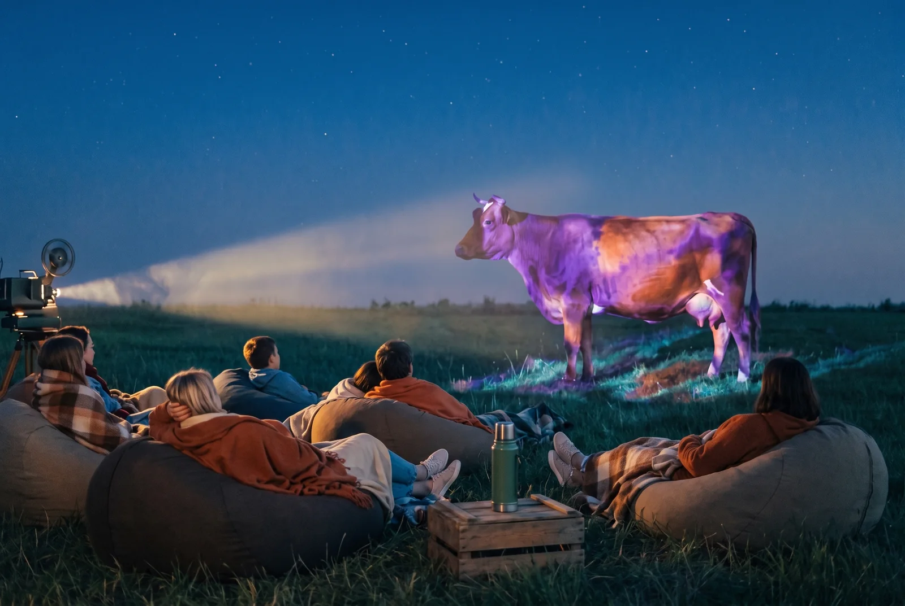

Началась осень — время, когда снова хочется уюта: плед, тёплый свет и хороший фильм. Мы собрали такую подборку вдвоём, каждая тянула в свою сторону: Елена — в сторону науки и того, как цвет устроен, Янита — в сторону палитры и того, как он сделан.
Цвет в кино срабатывает раньше сюжета. Вы ещё не поняли, кто кому кем приходится, а уже знаете, тревожно тут или тепло, — и решил это художник-постановщик, а не сценарист.
Тридцать фильмов на всю осень, а начать можно уже на этих выходных. Список разделён на три части: сначала документальное про устройство цвета, потом кино про художников и краски, потом игровое, ради которого и стоит освободить вечер.
Заодно это подготовка к сессии «Цвет личности. Личность цвета» — той, где участники смешивают собственную палитру руками и пишут пальцами, без кистей и без эскиза. Навык там нужен тот же, что и в кино: замечать, чем именно говорит цвет.
Как цвет вообще устроен
- «Цвет: спектр науки» / Colour: The Spectrum of ScienceBBC Four, 2015. Три серии, ведёт физик Хелен Черски. Почему земля, жизнь и небо окрашены именно так, и что происходит за границами видимого спектра. Самое внятное объяснение природы цвета из тех, что мы видели. выбор Елены
- «Жизнь в цвете» с Дэвидом Аттенборо / Life in Colour2021. Как животные видят цвет и что они им говорят друг другу: приманить, спрятаться, предупредить. Снято камерами, которые показывают то, чего человеческий глаз не различает. выбор Елены
- «Как рассказать историю с помощью цвета», Smirnov SchoolЛекция для художников — про то, как палитрой ведут зрителя по сюжету. Разбор на примерах, полезно смотреть с блокнотом. выбор Елены
Художники, краски и одна подошва
- «Матисс», цикл Exhibition on Screen2014. Про поздние вырезки: как он работал ножницами прямо по закрашенной гуашью бумаге, сидя в кресле, когда уже не мог стоять у мольберта.
- «По следам Кристиана Лабутена» / Sur les pas de Christian LouboutinОливье Гаруст, 2020. Там есть та самая сцена: он берёт у ассистентки лак для ногтей и закрашивает подошву. С этого началась красная подошва, за которую потом судились в трёх странах.
- «Барби»Грета Гервиг, 2023. Для съёмок скупили почти весь мировой запас флуоресцентной розовой краски Rosco — другим студиям её просто не хватило. Отличный пример того, как цвет становится собственностью бренда.
- «Красное» Джона ЛоганаПьеса, идёт в театрах, есть записи спектаклей. Два часа про Ротко и те самые панно для ресторана, которые он в итоге не отдал.

Кино, где цвет — главный герой
- «Три цвета: синий», «Белый», «Красный»Кшиштоф Кесьлёвский, 1993–1994. Три фильма, каждый залит своим цветом французского флага. Синий — про свободу и про то, как её переживают в одиночестве.
- «Любовное настроение»Вонг Кар-Вай, 2000. Красные шторы, зелёные стены коридора и двадцать с лишним платьев ципао, которые меняются вместо реплик.
- «Амели»Жан-Пьер Жёне, 2001. Париж, из которого убрали половину спектра: остались зелёный, красный и золотой.
- «Куклы»Такеши Китано, 2002. Четыре времени года и костюмы Ёдзи Ямамото — самый красивый фильм про цвет одежды.
- «Герой»Чжан Имоу, 2002. Одна и та же история рассказана несколько раз, и каждая версия сделана в своём цвете. Прямая демонстрация того, что цвет — это точка зрения.
- «Весна, лето, осень, зима… и снова весна»Ким Ки Дук, 2003. Год на плавучем храме: цвет меняется вместе с водой и лесом, больше ничего и не нужно.
- «Поезд на Дарджилинг», «Бесподобный мистер Фокс», «Королевство полной луны», «Отель „Гранд Будапешт“»Уэс Андерсон, 2007–2014. Четыре фильма подряд можно смотреть как учебник: у каждого своя жёстко собранная палитра, от осенней охры до розового кондитерского.
- «Аватар»Джеймс Кэмерон, 2009. Целая планета, придуманная через свечение: биолюминесцентный лес ночью работает как отдельный персонаж.
- «Она»Спайк Джонз, 2013. Художники почти убрали из кадра синий — и получился тёплый, коралловый, чуть душный мир будущего.
- «Головоломка»Пит Доктер, 2015. Эмоции сделаны цветами, и это ровно то, что мы делаем на сессии, только у нас наоборот: сначала состояние, потом краска.
- «Ла-Ла Ленд»Дэмьен Шазелл, 2016. Платья чистых основных цветов на фоне лиловых сумерек — цвет тут держит всю музыкальную драматургию.
- «Основатель»Джон Ли Хэнкок, 2016. История про то, как красное с жёлтым стали стоить миллиарды.
- «Тайна Коко»Ли Анкрич, 2017. Мир мёртвых, собранный из неона и оранжевых бархатцев. Смотреть на большом экране и в темноте.
- «Книга образа»Жан-Люк Годар, 2018. Здесь цвет откручен до предела и намеренно испорчен — видно, что происходит с изображением, когда его перекрашивают.
- «Зелёная книга»Питер Фаррелли, 2018. Америка шестидесятых, собранная по цвету автомобилей, вывесок и костюмов.
- «Легенда о Зелёном рыцаре»Дэвид Лоури, 2021. Фильм, названный по цвету, и цвет тут — сюжет, а не оформление.
- «Дюна»Дени Вильнёв, 2021. Почти монохром: охра, песок, сталь. Урок того, как обходиться двумя цветами и не заскучать.
- «Удивительная миссис Мейзел»Эми Шерман-Палладино, 2017–2023. Сериал, ради которого стоит смотреть только на костюмы: палитра героини меняется вместе с её жизнью.
Три приёма, чтобы это было про цвет
Отключить звук на пять минут. Без реплик сразу видно, чем сцена держится: где светлее, где теплее, куда вас ведут глазами.
Поймать момент, когда палитра меняется. Почти в каждом фильме из списка есть сцена-переключатель: цвет уходит или, наоборот, врывается. Обычно это и есть поворот сюжета, сделанный на минуту раньше слов.
Назвать три цвета вслух. Не «синий», а «синий как чернила», «пыльный розовый», «зелёный больничный». Точность названия — это и есть насмотренность; дальше рука сама начинает искать этот цвет на палитре.
Насмотренность превращается в собственную палитру, когда её начинаешь мешать руками. Ровно этим мы занимаемся на сессии «Цвет личности. Личность цвета»: собираем свой колорит на палитре и пишем пальцами, без кистей и без эскиза. Записаться на встречу
#смотрим #фильмыПроЦвет #цвет #насмотренность #арткоучинг #МыДолжныБытьВоображаемы